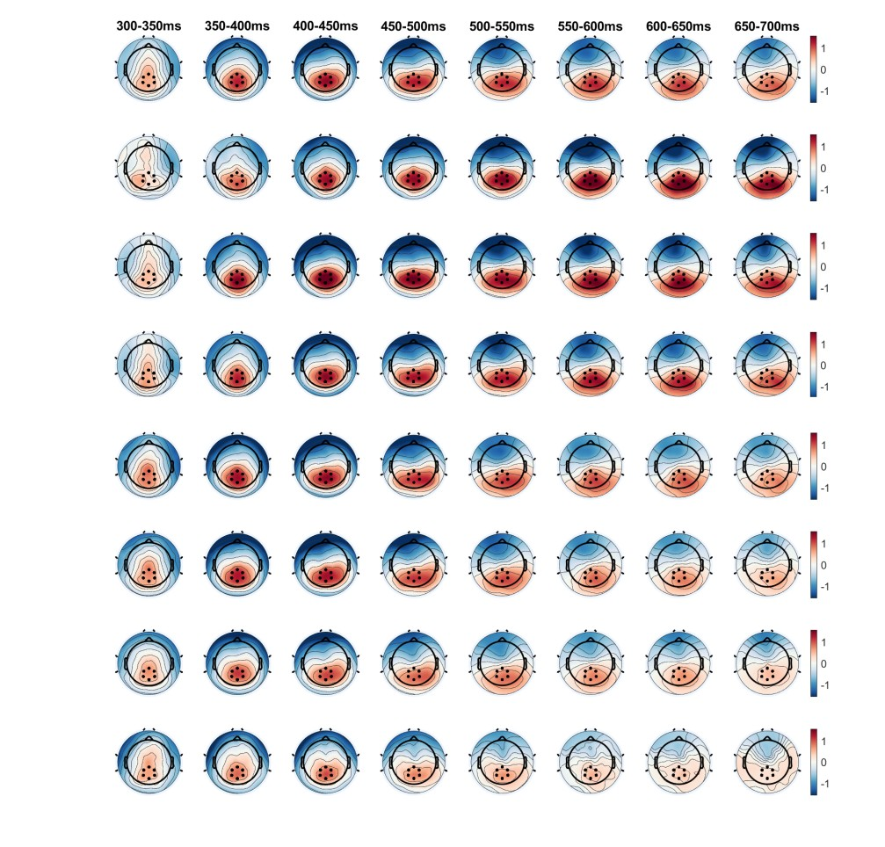
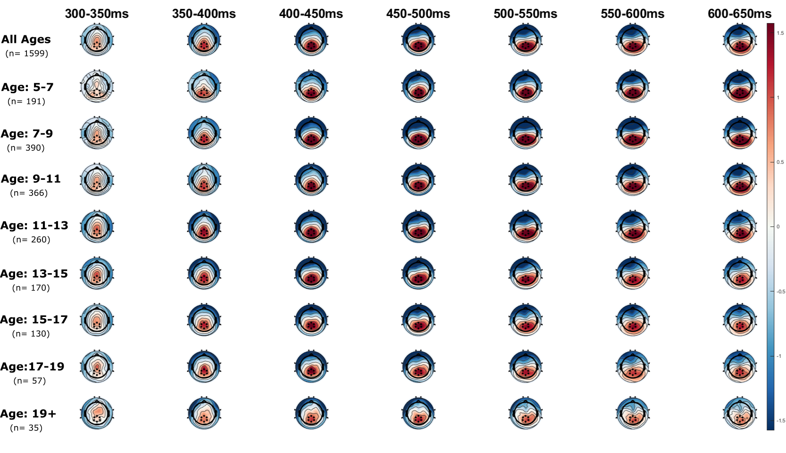
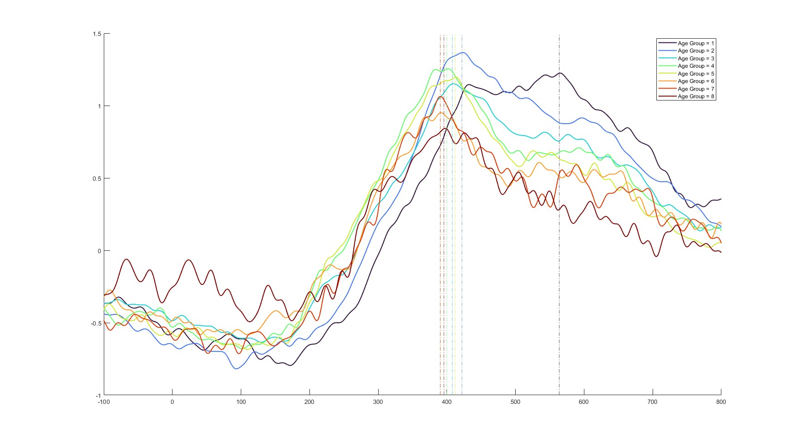

Chapter 3 Methods
3.2 EEG and Age Groups
3.2.1 Time Window, Electrodes
In the figure 3.2 we can see that the same electrodes can be used for all age groups. Furthermore, it seems as if the older age groups have less peak amplitude with shorter duration and less broad positivity.

Figure 3.2: Topoplot of age groups.
Updated topoplot but not as clearly viewable maybe add less time points and/or do all ages seperatly (??) ?

Figure 3.3: Topoplot of age groups.
Plotting the erp of different age groups indicates that in the younger age groups it’s possible that the p300 peak measure is confounded underlying broad positivity (see 3.4).

Figure 3.4: ERP of age groups.